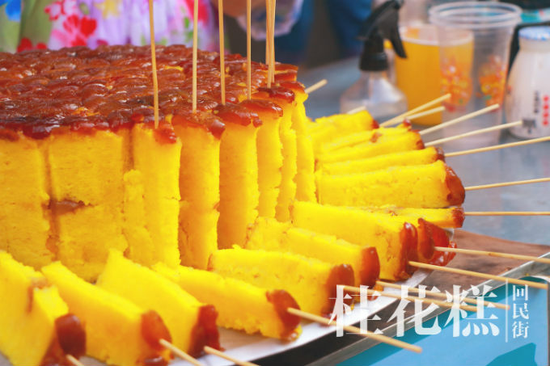
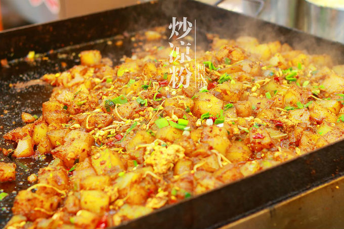
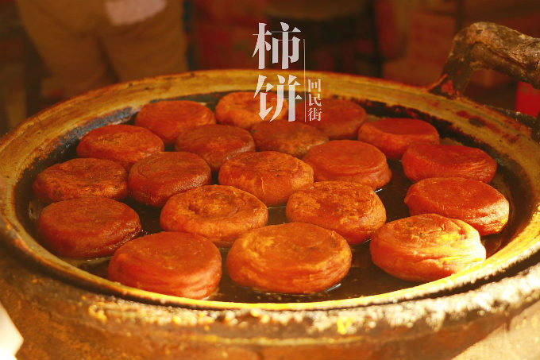
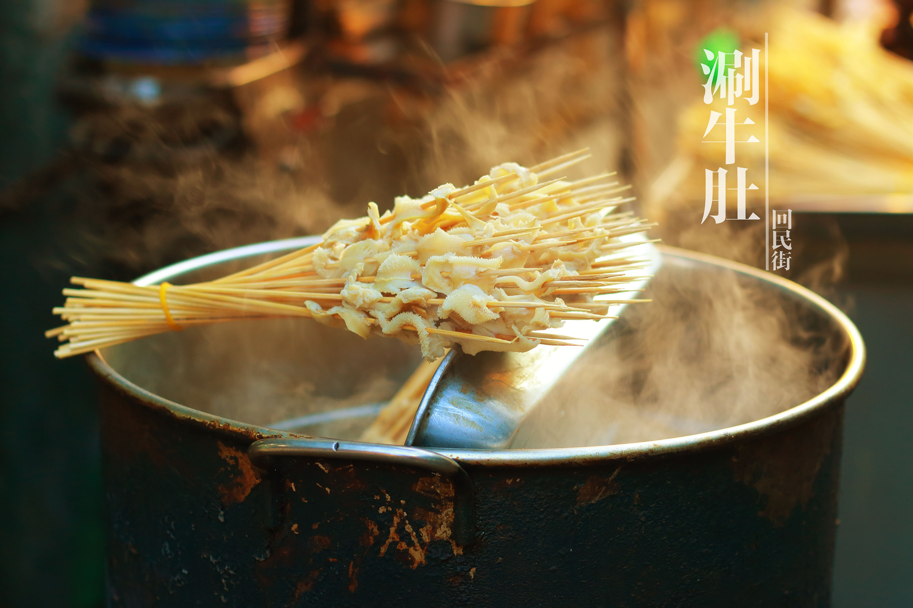

—— 西安美食 ——
- My Story -
肉夹馍：传统的西安肉夹馍有着精细的制作过程，每个可口味美的肉夹馍都是由几十种调料精心配制而成。由于选料精细，火功到家，加上使用秘制老汤，因此制作出来的腊汁肉色泽红润，气味芬芳，肉质软糯，糜而不烂。肉夹馍，实际上是腊汁肉和白吉馍两种食物的绝妙搭配组合。
推荐
回民街的桂花糕
街头的炒凉粉
软软的柿饼
涮牛肚
老孙家羊肉泡馍
肉丸胡辣汤
岐山臊子面
凉皮肉夹馍
   